Передаточная функция: что выходит по сравнению с тем, что вошло
Схему рассматриваем как коробку: что-то входит (X), что-то выходит (Y). Передаточная функция T(s) (по-польски transmitancja) показывает, как выход относится ко входу:

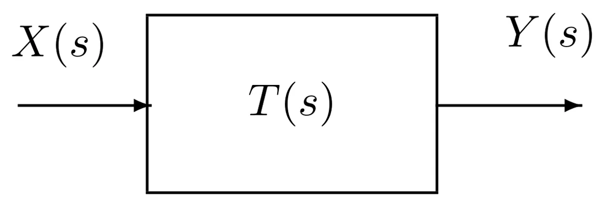
По-простому
Передаточная функция — это «рецепт коробки». Если для данной частоты T = 0,5, то из 2 В на входе остаётся 1 В на выходе. Вся лекция сводится к вопросу: сколько сигнала проходит на какой частоте.
Во временной области ту же связь описывает свёртка (интеграл) — поэтому удобнее считать в области Лапласа, где достаточно умножения (см. лекцию 2).
Делитель напряжения
Два резистора, соединённых последовательно; выход снимаем с нижнего.

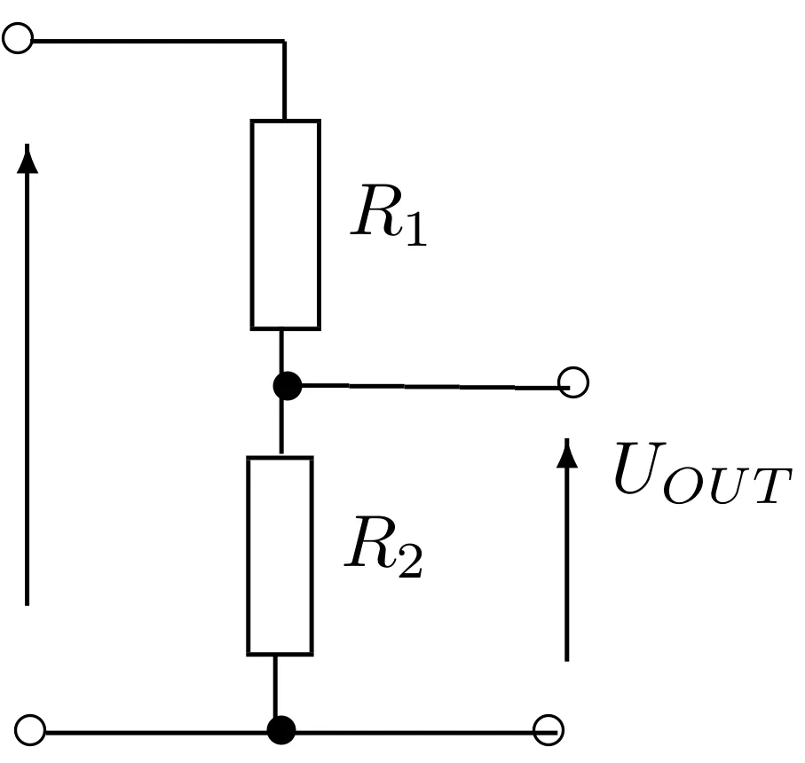
Выходное напряжение пропорционально входному, а коэффициент равен R2R1+R2 — он всегда меньше 1.
✚ Собственный пример
UIN = 12 В, R1 = 10 кОм, R2 = 5 кОм: UOUT = 510 + 5 · 12 = 4 В.
Два одинаковых резистора всегда дают половину напряжения.
Импедансный делитель
Вместо резисторов можно поставить любые импедансы — формула та же:

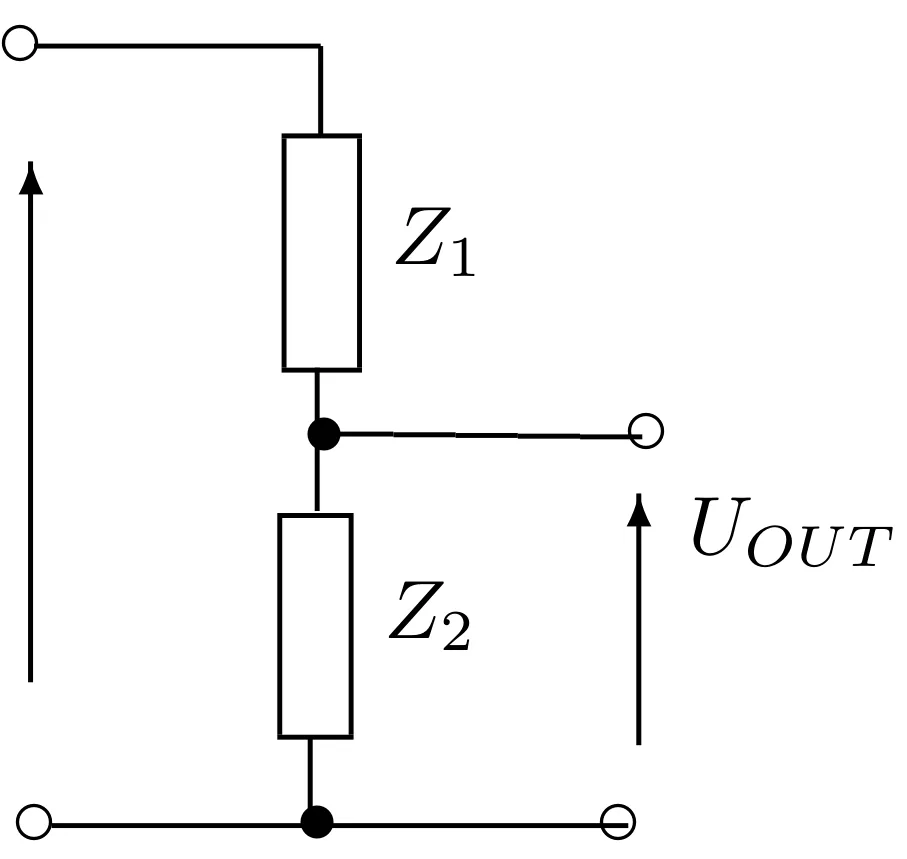
Разница в том, что теперь коэффициент деления — комплексное число: оно несёт информацию и об амплитуде, и о фазе. А так как импеданс конденсатора зависит от частоты, то и деление зависит от частоты. Это и есть фильтр.
RC-делитель и постоянная времени
Верхний элемент — резистор (Z1 = R), нижний — конденсатор (Z2 = 1sC):

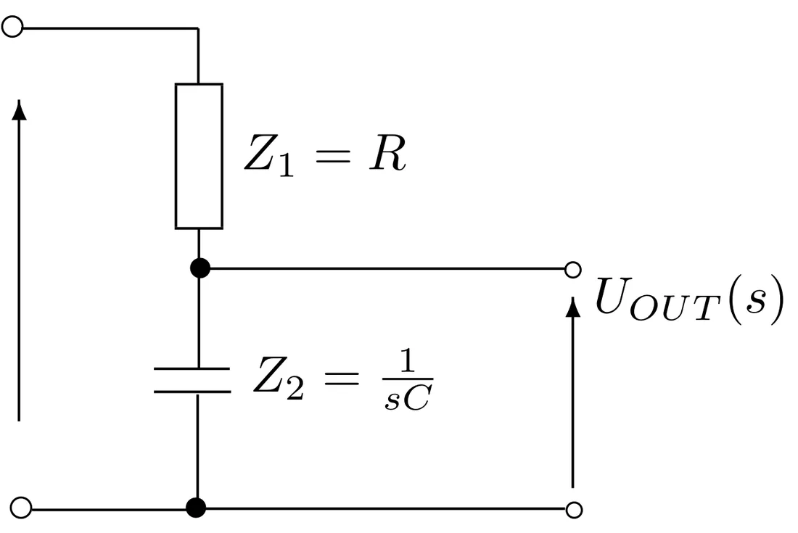
Произведение T = R · C — это постоянная времени (в секундах). Она показывает, как быстро схема реагирует.

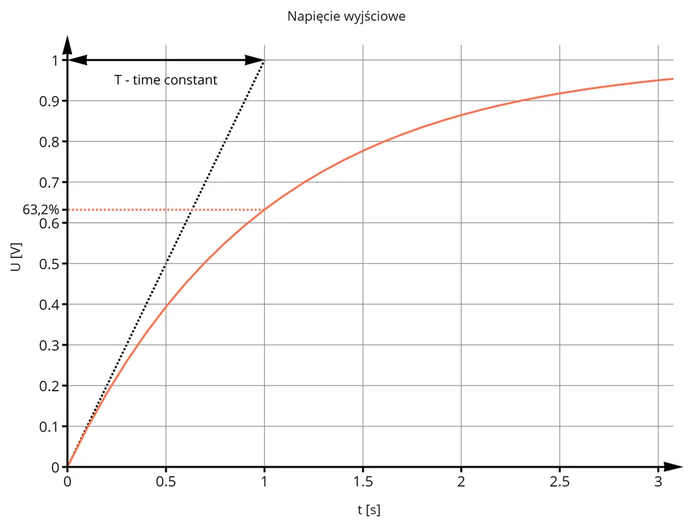
Если на вход резко подать постоянное напряжение (единичный скачок), конденсатор зарядится не сразу. Через время, равное T, он заряжен до 63,2% полного значения.
От автора сайта (не из лекции)
На практике считают, что через 5·T конденсатор «заряжен полностью» (больше 99%). Пример: R = 10 кОм, C = 100 мкФ → T = 1 с, полный заряд примерно через 5 с.
Частотное описание: амплитуда и фаза
Подставляем s = jω. Для каждой частоты передаточная функция — комплексное число:
- модуль |T| = амплитуда выходаамплитуда входа — во сколько раз сигнал уменьшился (или вырос),
- фаза φ — насколько выход сдвинут во времени относительно входа.

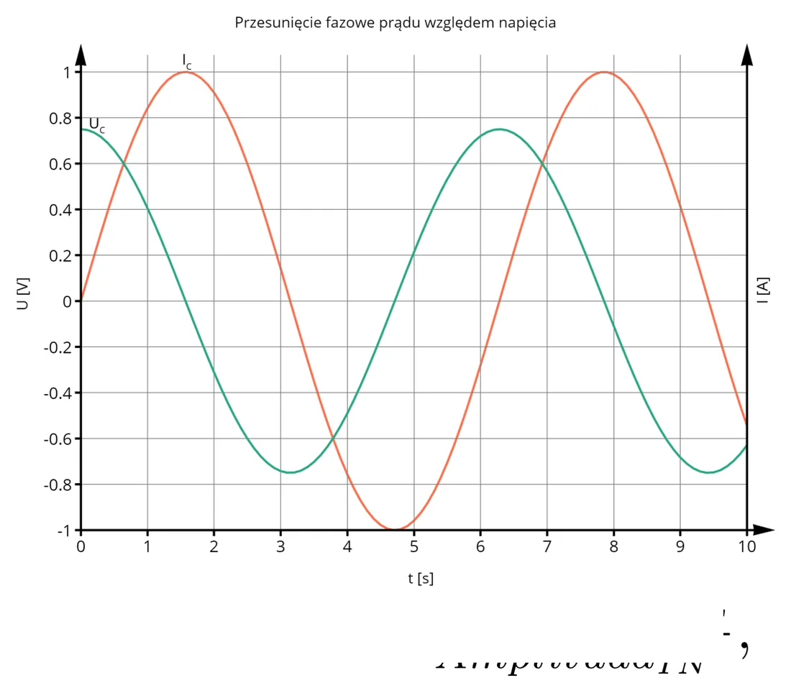
Линейные системы
Передаточная функция описывает линейные системы. Два их свойства:
- Синус частоты f на входе даёт на выходе синус той же частоты (меняются только амплитуда и фаза).
- Принцип суперпозиции: если вход — сумма двух сигналов, то выход — сумма откликов на каждый из них по отдельности.
Децибелы и логарифмическая шкала
Усиление (или ослабление) удобно выражать в децибелах:
| Отношение UOUT/UIN | В децибелах | |
|---|---|---|
| 1 | 0 дБ | без изменений |
| 0,707 (1/√) | −3 дБ | граничная частота |
| 0,5 | −6 дБ | ✚ |
| 0,1 | −20 дБ | в 10 раз меньше |
| 0,01 | −40 дБ | в 100 раз меньше |
| 10 | +20 дБ | в 10 раз больше ✚ |
График усиления и фазы в зависимости от частоты (ось частоты логарифмическая: 10, 100, 1000…) — это диаграмма Боде (ЛАЧХ и ЛФЧХ).

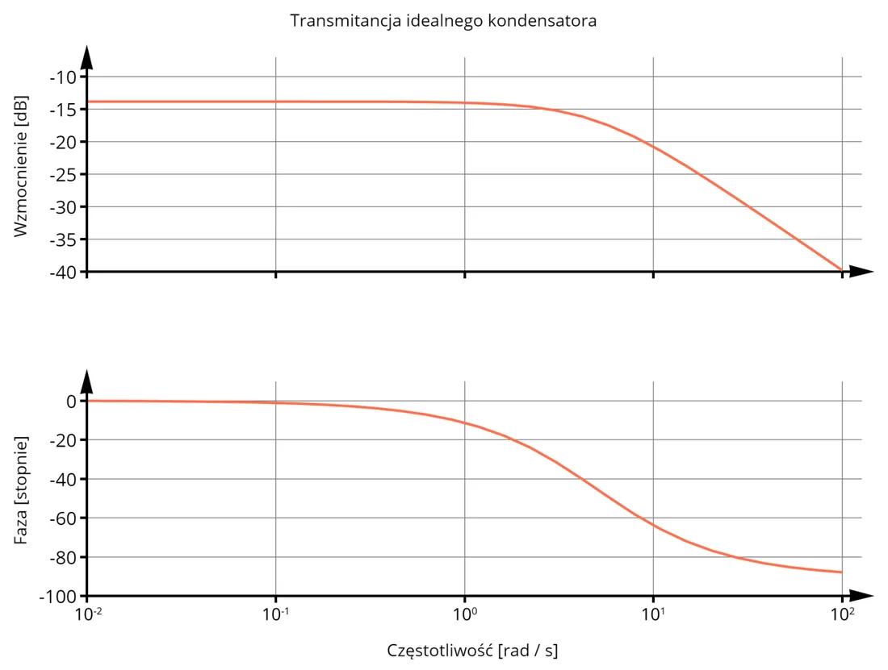
Выше граничной частоты характеристика падает с постоянным наклоном −20 дБ на декаду: каждое увеличение частоты в 10 раз — это в 10 раз меньшая амплитуда.
Граничная частота
Граничная частота (частота среза, częstotliwość graniczna) — та, при которой амплитуда падает до 1√ ≈ 0,707 от максимальной, то есть на 3 дБ:
Почему именно столько? Потому что тогда мощность сигнала падает ровно вдвое (P = U2/R, а 0,7072 = 0,5).
Фильтр нижних частот (RC)
Пропускает низкие частоты, подавляет высокие. Это и есть RC-делитель с конденсатором внизу.

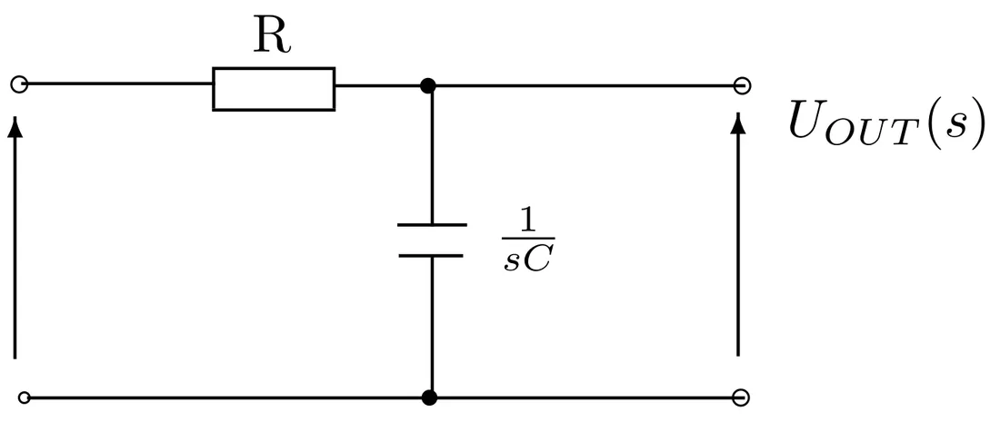
По-простому
На низких частотах у конденсатора огромное сопротивление — почти всё напряжение «остаётся» на нём и попадает на выход. На высоких конденсатор — почти замыкание на массу, и на выходе ничего не остаётся.
Фильтр верхних частот (CR)
Меняем элементы местами: конденсатор последовательно, резистор на массу. Пропускает высокие частоты.

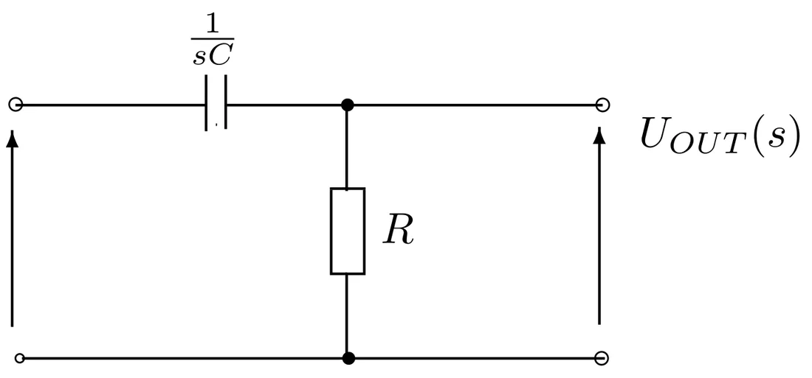

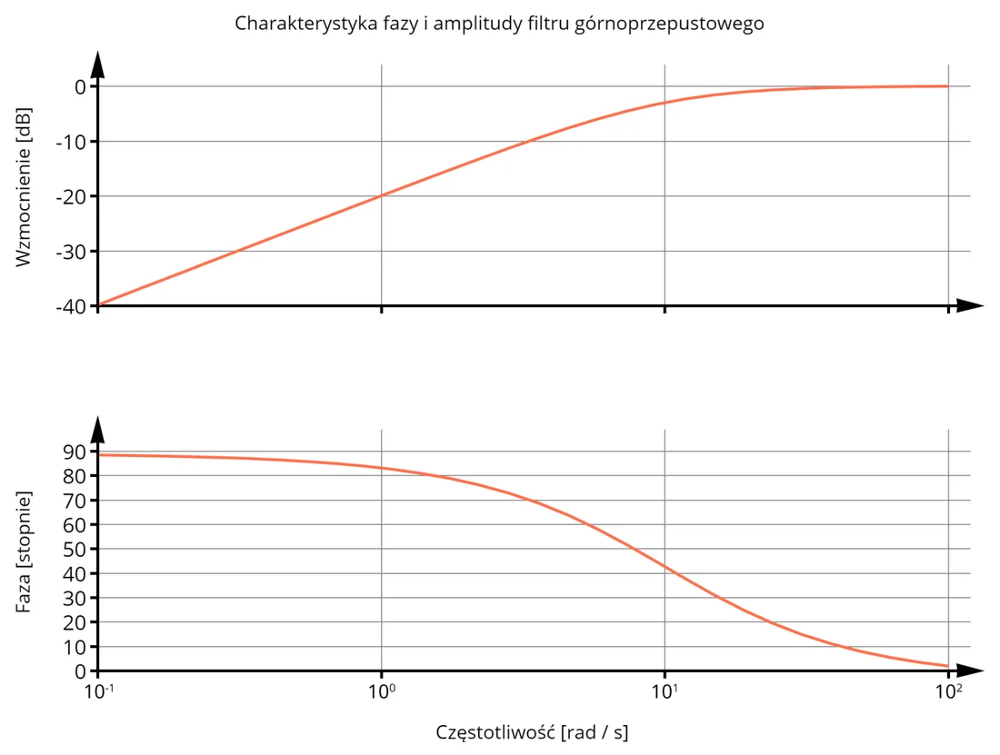
✚ Собственный пример: R = 4,7 кОм, C = 3,3 нФ
fg = 12π · 4700 · 3,3 × 10−9 ≈ 10,3 кГц
Для фильтра нижних частот k = 1√:
| f | f/fg | k | kdB |
|---|---|---|---|
| 1 кГц | 0,097 | 0,995 | 0,0 дБ |
| 10,3 кГц | 1 | 0,707 | −3,0 дБ |
| 100 кГц | 9,75 | 0,102 | −19,8 дБ |
| 1 МГц | 97,5 | 0,0103 | −39,8 дБ |
Для фильтра верхних частот из тех же элементов наоборот: на 1 кГц около −20 дБ, на 1 МГц — 0 дБ.
Полосовой фильтр и фильтры высших порядков
Полосовой = фильтр верхних и фильтр нижних частот один за другим. Полоса ограничена и снизу, и сверху. Передаточные функции блоков, включённых каскадом, перемножаются:

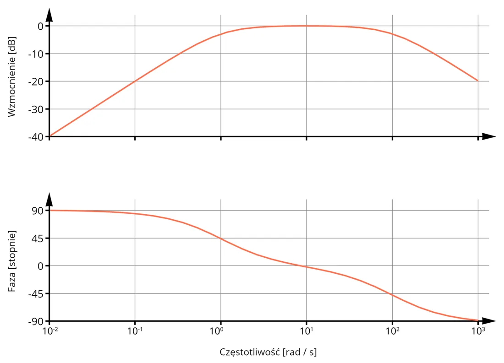
Более высокий порядок: два одинаковых фильтра подряд дают наклон −40 дБ/дек (вдвое круче). Из соображений устойчивости соединяют максимум 3 фильтра.
От автора сайта (не из лекции)
На слайде в формуле полосового фильтра в знаменателях пропущена буква s (написано «1 + R₁C₁»); выше приведена правильная запись.
Соединение импедансов
| Соединение | В общем виде | Резисторы | Конденсаторы | Катушки |
|---|---|---|---|---|
| Последовательное | Z = Z1 + Z2 + … | R = R1 + R2 + … | 1C = 1C1 + 1C2 + … | L = L1 + L2 + … |
| Параллельное | 1Z = 1Z1 + 1Z2 + … | 1R = 1R1 + 1R2 + … | C = C1 + C2 + … | 1L = 1L1 + 1L2 + … |
Конденсаторы ведут себя «наоборот» по сравнению с резисторами: при параллельном соединении ёмкости складываются.
✚ Собственный пример
Резисторы 1 кОм и 3 кОм: последовательно 4 кОм; параллельно 1 · 31 + 3 = 0,75 кОм (для двух элементов удобная формула: произведение на сумму). Результат параллельного соединения всегда меньше наименьшего из резисторов.
Пример из лекции — ветвь R + L параллельно с C:

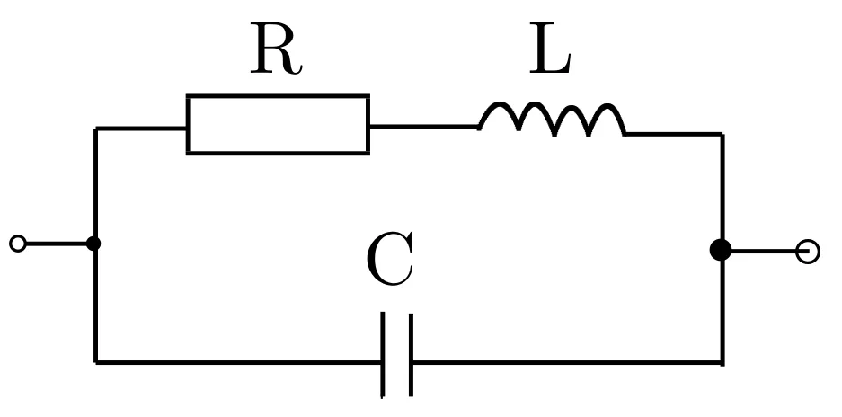
Двухполюсник и четырёхполюсник
- Двухполюсник (dwójnik) — схема с двумя выводами. Нас не интересует, что внутри; описываем его напряжением и током на выводах: V1 = Z · I1.
- Четырёхполюсник (czwórnik) — схема с двумя парами выводов: входом (V1, I1) и выходом (V2, I2). Фильтр — это четырёхполюсник.

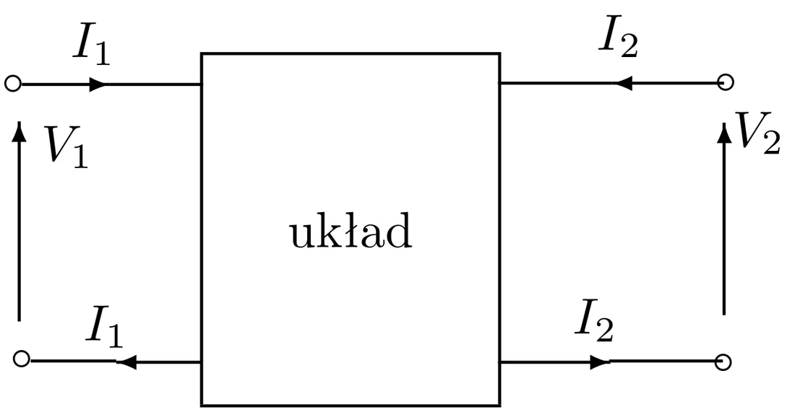
Измерение фильтров на практике: Лабораторная 4.